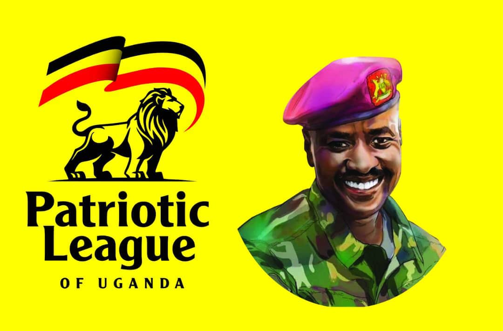
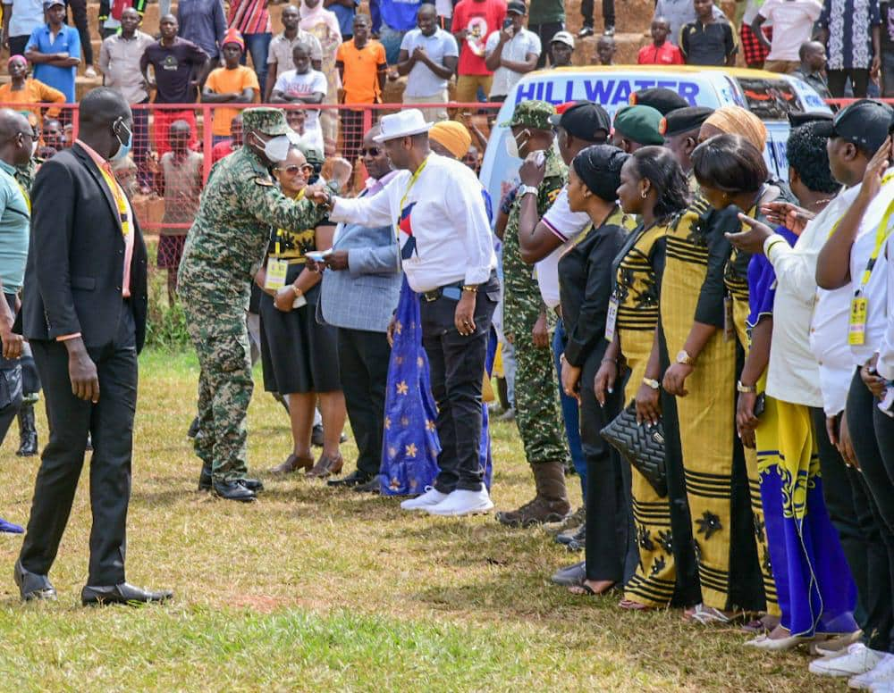
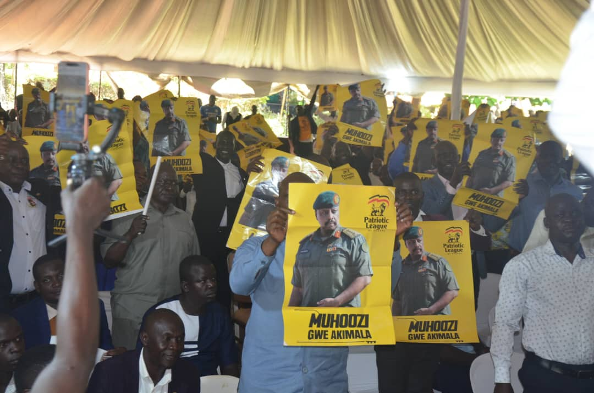
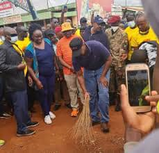
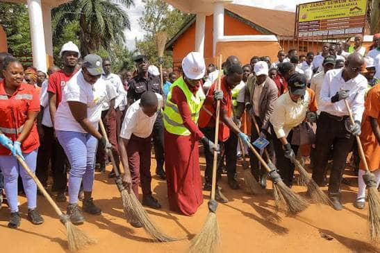
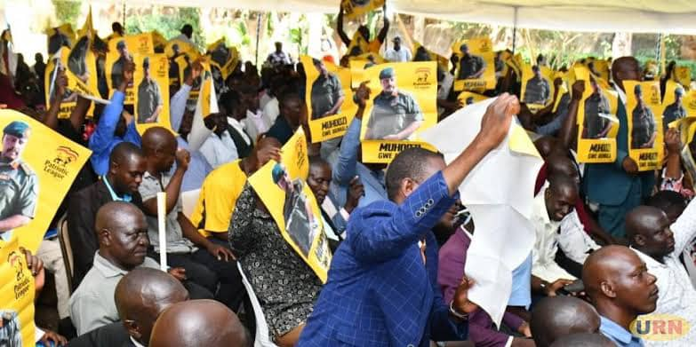
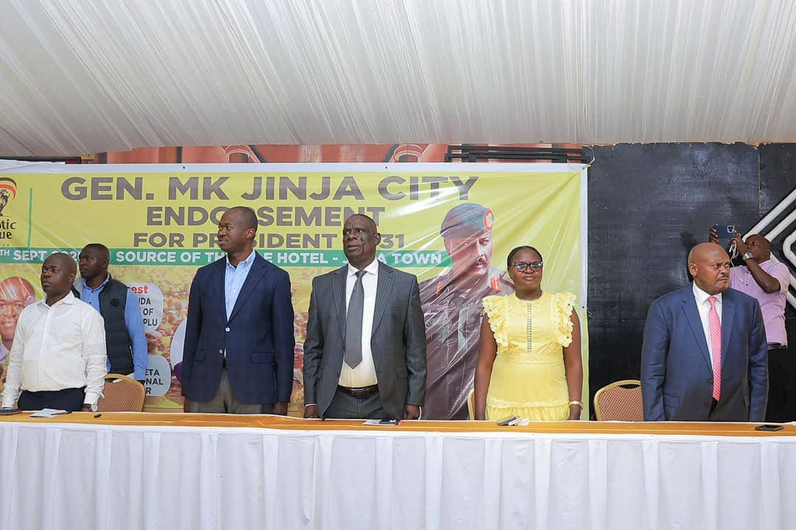
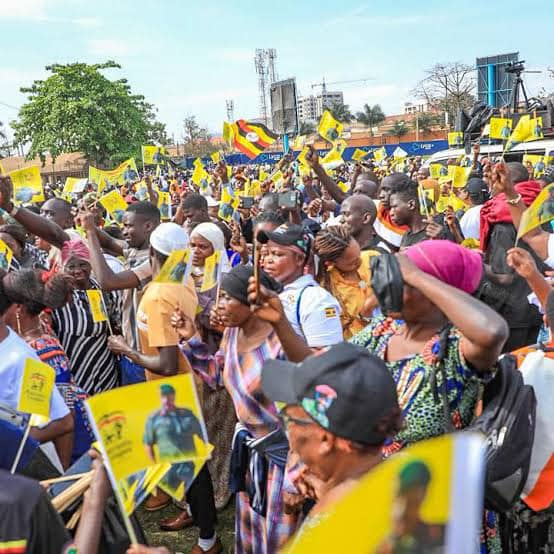
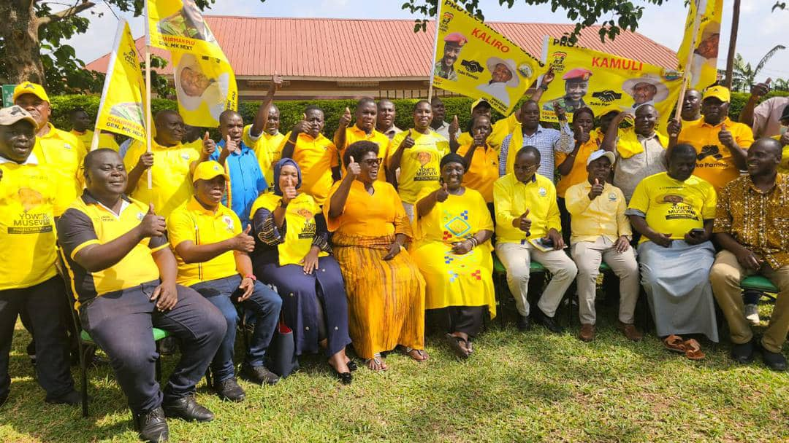

Serving Busoga Through Patriotism, Unity and Community Action
BRPV is a Busoga-focused patriotic volunteer and mobilisation initiative associated with the Patriotic League of Uganda (PLU). We work to unite communities across the Busoga region through service, civic engagement and regional mobilisation.

Busoga Region · UgandaA Regional Voice for Patriotism and Service in Busoga
Busoga Region Patriotic Volunteers brings together volunteers, community leaders and citizens committed to the social and civic development of the Busoga region.
Operating under the wider framework of the Patriotic League of Uganda, BRPV coordinates regional mobilisation, community engagement and patriotic volunteering across the districts of Busoga.
Learn more about BRPV →Eng. Kizza Isma Kinyiri
Chief Mobiliser — Busoga Region
Eng. Kizza Isma Kinyiri leads BRPV as Chief Mobiliser for the Busoga Region, providing strategic direction for regional mobilisation, volunteer coordination and community engagement across all Busoga districts.
Why BRPV Exists
To strengthen patriotic values, volunteerism and community-led development throughout the Busoga region.
Patriotism
Promoting a culture of love for country, civic responsibility and national unity across Busoga.
Unity
Bringing together people from all districts of Busoga around shared values and common goals.
Service
Organising volunteers to serve communities through practical action and regional mobilisation.
The Principles That Guide Us
BRPV is built on values that reflect the aspirations of the people of Busoga and the wider patriotic movement.
Integrity
We act honestly and transparently in all our volunteer and mobilisation work.
Accountability
We are answerable to the communities we serve and the structures we support.
Inclusivity
We welcome volunteers from every district, background and walk of life in Busoga.

What We Do Across Busoga
Community Engagement
Working with local communities on shared priorities and civic participation.
Volunteer Activities
Organising practical volunteer efforts that serve Busoga communities.
Youth Activities
Engaging young people in patriotic values, skills and service.
Regional Mobilisation
Coordinating district-level mobilisation across the Busoga region.
Across the Region
BRPV coordinates volunteers and activities across the districts that make up the Busoga region.
Busoga
Regional coverage
Multiple
Districts engaged
Local
Coordinators & volunteers
Community
Driven mobilisation
What's Coming Up

Regional Mobilisation Meeting

Community Volunteer Day

Youth Patriotism Forum
From the Region

BRPV Continues Regional Mobilisation
Volunteers Engage Local Communities

Leadership Meets District Coordinators
Moments from the Region


Endorse Gen. Muhoozi Kainerugaba for President, 2031
Add your voice to the voluntary endorsement campaign led by BRPV. This is an organisational endorsement registration — not an official ballot or Electoral Commission process.
Become a BRPV Volunteer
Join a growing movement of patriotic volunteers serving communities across the Busoga region.
Get in Touch with BRPV
Reach out to the office of the Chief Mobiliser or your local district coordinator.
Email
busogaplu@gmail.com
Phone
0702209377/0772798969
Office
Jinja City